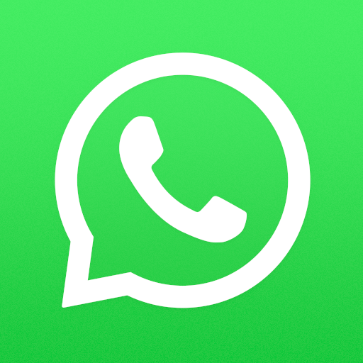
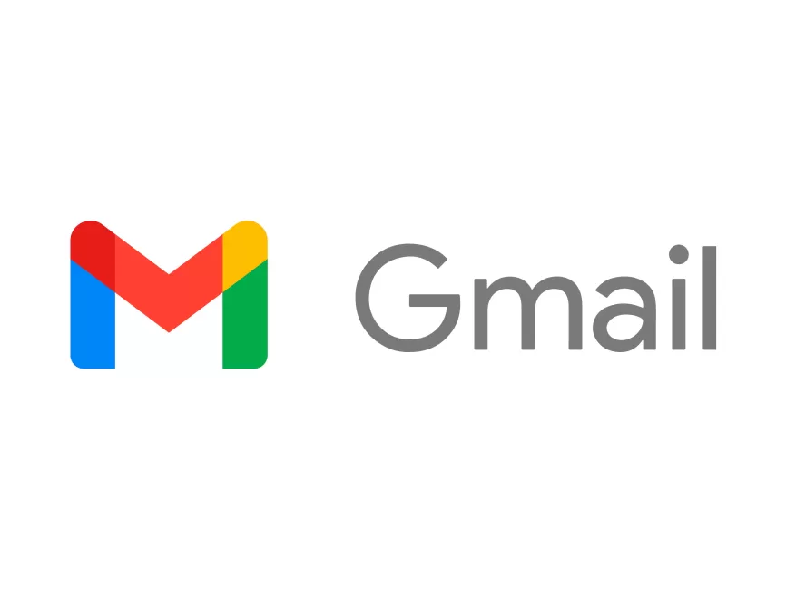

Las 5 Web Apps más famosas
En este blog os mostraremos las top 5 aplicaciones web
más famosas de la actualidad. Estás aplicaciones son
las que son utilizadas día a día por la mayor parte
de las personas por lo que son las que consumen el
mayor tráfico de internet.
1. WhatsApp

Lanzada el 22 de enero de 2009, sin lugar a duda Whatsapp es
una aplicación de mensajería o chat importante en la actualidad,
es casi un hecho que cada celular tiene instalado Whatsapp (a excepción de paises como
China y Corea del Norte) y con la versión Web cada
computadora puede tenerla en el navegador. Fue desarrollada por WhatsApp LLC
y actualmente le pertenece a la coorporación de Meta.
Tecnologías usadas
- PWA
- Prism
- Erlang
- Ejabberd (XMPP) server
2. Facebook/Meta
Lanzada el 4 de febrero de 2004, fue desarrollada por
Mark Zuckerberg, y es una de las aplicaciones de redes
sociales más usadas hasta la fecha por su facilidad
de conectar con personas de todo el mundo. Actualmente le
pertence a la coorporación Meta
Tecnologías usadas
- Linux
- Cassandra
- Hive
- Thrift
- Scribe
- HipHop for PHP
3. X

Anteriormente llamada Twitter, fue lanzada el 21 de marzo de 2006
y desarrollada por Jack Dorsey bajo la coorporación Twitter, Inc.
Actualmente le pertence a la coorporación X Corp. y tiene como
propietario a Elon Musk. Es una red social que tiene como principal
característica una visualización de hilos (conversaciones y respuestas)
muy amigable.
Tecnologías usadas
- React
- Webpack
- PWA
- Open Graph
- Scala
- Bootstrap
- MySQL
4. YouTube
Fue fundada el 14 de febrero de 2005 por Chad Hurley, Steve Chen y Jawed Karim
y actualmente le pertence a la coorporación Alphabet Inc. cuyo
principal filial es Google. Se trata de la apliación más usada
para ver y compartir videos por la web, destaca por su facilidad
de uso y su buscador de videos.
Tecnologías usadas
- Polymer
- PWA
- Open Graph
- Hammer.js
- HSTS
5. Gmail

Fue lanzada el 1 de abril de 2004 y desarrollada por Paul Buchheit.
Su propietario es Google LLC (filial de Alphabet Inc.). Se trata
de uno de los proveedores de servicio de correo electronico
más usados. Entre sus características destaca su facilidad de
uso en cualquier navegador web y también permite crear un correo
electronico a cualquier persona.
Tecnologías usadas
- Java
- Python
- C++
- HTML/CSS/JS
- AJAX